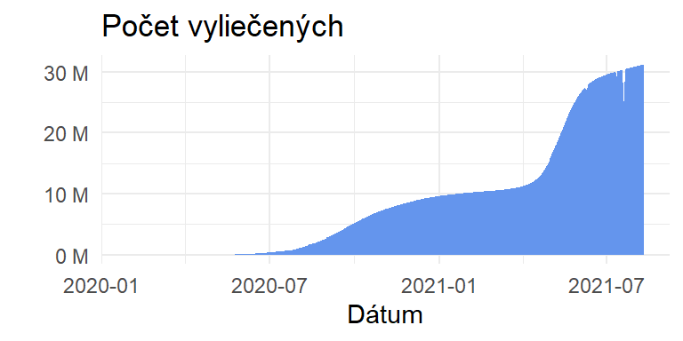
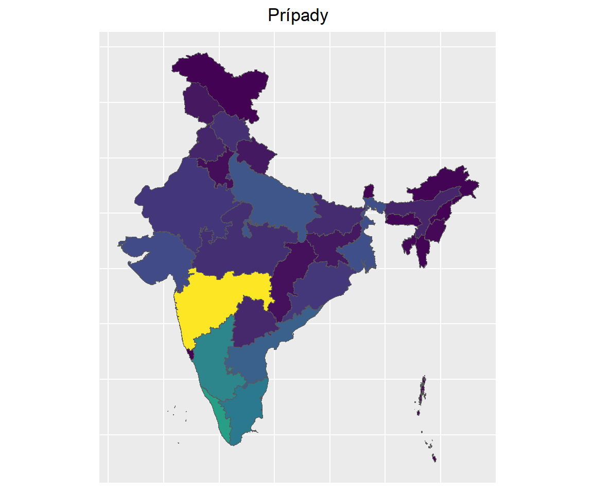

Covid-analysis
Úvod do Problematiky
Pandémia COVID-19 vytvorila obrovské množstvo údajov, ktoré umožnili výskumníkom, analytikom a vedcom údajov získať prehľad a pochopiť vplyv vírusu na rôzne aspekty nášho života. R, populárny programovací jazyk pre štatistické výpočty a analýzu údajov, poskytuje širokú škálu nástrojov a balíkov na efektívne skúmanie a analýzu súborov údajov COVID-19.
V tomto projekte predstavíme niekoľko súborov údajov analýzy COVID-19, ktoré sú ľahko dostupné pre používateľov R. Tieto súbory údajov obsahujú informácie o potvrdených prípadoch, úmrtiach, testovaní, hospitalizáciách, očkovaniach a iných relevantných premenných na rôznych geografických úrovniach, ako sú globálne, národné, regionálne a lokálne. Analýza týchto súborov údajov nám môže pomôcť sledovať šírenie vírusu, identifikovať trendy a informovať o rozhodovacích procesoch.
Pozorovanie, analýza a hypotézy z Datasetov
Denné hodnoty úmrtí, vyliečení a potvrdených prípadov v rozličných štátoch Indie sa nachádza v súbore covid_19_india.csv Hodnoty celoštátnych testovanií jednotlivých štátov sa nachádzajú v covid_vaccine_statewise.csv Dáta obsahujúce hodnoty o očkovaní (kedy, koľko dávok, aký typ vakcinácie, pohlavie) sa nachádza v súbore 2_StatewiseTestingDetails.csv


Treemap

Vývoj všetkých ochorene
# A tibble: 1 × 4
Dátum cured deaths conf
<date> <int> <int> <int>
1 2021-08-10 31220981 429179 32036511
kategorizácia
Aké je skúmané obdobie? Výsledky skúmaného obdobia, muži ženy trans muži 53 percent, ženy 46 pecent

Veková reprezentácia 36 percent